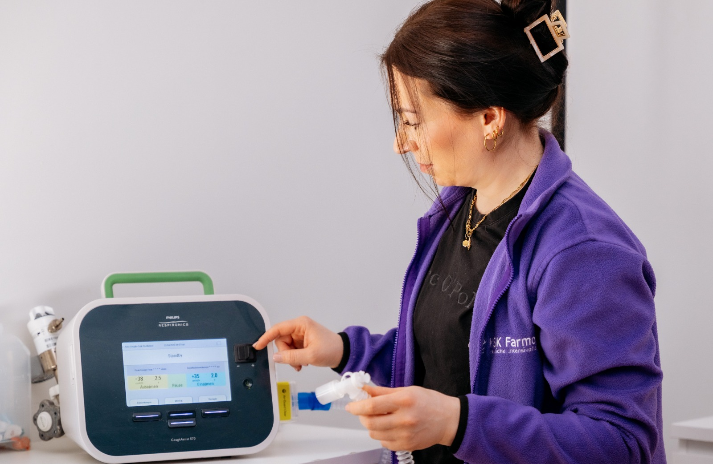

Unsere medizinischen
Leistungen
Intensivpflege zu Hause, einzigartige Wohnkonzepte und ständige Weiterbildung — alles aus einer Hand.

Professionelle Pflege in Ihren eigenen vier Wänden
Wir versorgen Menschen mit schweren Erkrankungen in ihrem gewohnten Umfeld — 24 Stunden am Tag, 7 Tage die Woche, 365 Tage im Jahr.
- Grund- und Behandlungspflege
- Medikamentenmanagement
- Vitalzeichenüberwachung und Monitoring
- Invasive und nicht-invasive Beatmung
- Trachealkanülenmanagement
- Wundversorgung und Ernährungstherapie
- Pflegeplanung und Dokumentation
- Koordination mit Ärzten und Therapeuten

Die Beatmungspflege ist unsere Kernkompetenz. Wir betreuen Patienten mit invasiver und nicht-invasiver Beatmung — mit erfahrenen Fachkräften, modernster Technik und in enger Zusammenarbeit mit Pneumologen und Anästhesisten.
Wen wir versorgen
Beatmungspatienten
Spezialisierte Intensivpflege für Menschen, die auf invasive oder nicht-invasive Beatmung angewiesen sind. Wir sichern die lückenlose Überwachung und professionelles Gerätemanagement.
Wachkoma (Apallisches Syndrom)
Ganzheitliche Langzeitversorgung für Patienten mit schweren Bewusstseinsstörungen. Unser Fokus liegt auf basaler Stimulation und der Erhaltung von Körperfunktionen.
ALS / Neurologische Erkrankungen
Individuelle Begleitung bei fortschreitenden neurologischen Veränderungen — empathisch, fachlich fundiert und auf die Erhaltung der Lebensqualität ausgerichtet.
Querschnittslähmung
Professionelle Unterstützung und Pflege für Menschen mit Rückenmarksverletzungen. Wir fördern die Selbstständigkeit und beugen gezielt Komplikationen vor.
Schädel-Hirn-Trauma
Langfristige Versorgung nach schweren Hirnverletzungen. Zielgerichtet auf die Stabilisierung des Zustands und Unterstützung im Alltag.
Was Sie erwartet
An der Sommerbergstraße 14 in Kassel bieten wir Patienten eigene Zimmer mit 24-Stunden-Betreuung.
- Eigenes Zimmer mit eigenen Möbeln
- Alle notwendigen medizinischen Geräte
- Großzügiger Garten
- Bibliothek und Gemeinschaftsräume
- 5,5 Mitarbeiter pro Patient
- 24h Betreuung und Überwachung
- Umfassende pflegerische und medizinische Leistungen
- Individuell gestalteter Tagesablauf

8 Fachbereiche der Schulung
Regelmäßig durchgeführt unter Leitung von Fachärzten für Pneumologie, Kardiologie und Anästhesiologie.
Hygiene und Infektionsschutz
Desinfektion, Sterilisation, Schutzmaßnahmen und Impfungen.
Atmung und Beatmung
Respiratorische Störungen, Beatmungstechniken, Intubation, Medikamente.
Herz-Kreislauf-System
Herzinsuffizienz, Reanimation, Defibrillation, Medikation.
Schockgeschehen
6 Schockformen: hypovolämisch, kardiogen, septisch-toxisch, anaphylaktisch.
Internistische Notfälle
Tracheotomie, Pleurapunktion, PEEP-Beatmung, Druckinfusion.
Traumatologische Notfälle
Schädel-Hirn-Verletzungen, Blutungen, Erstversorgung.
Brustkorbverletzungen
Lungenkontusion, Hämatothorax, Pneumothorax, Herzkontusion.
Thermische Notfälle
Hitze- und Kälteschäden, Verbrennungen, Inhalationstrauma.
Wer die Kosten trägt
Erfahrene Mitarbeiter vom Intensivpflegedienst KSK Farmos übernehmen nach Erhalt einer Vollmacht die Verhandlungen mit den Kostenträgern bezüglich der Finanzierung einer 24-stündigen Intensiv-Versorgung. Diese sind in der Regel:
Krankenkasse (SGB V)
Anspruch auf häusliche Krankenpflege (Intensivpflege) besteht, wenn eine im Haus lebende Person den Kranken nicht in dem erforderlichen Umfang pflegen und versorgen kann. Die Krankenkasse kann zusätzlich zu den Kosten der Behandlungspflege auch die Kosten der häuslichen Krankenpflege, der Grundpflege und der hauswirtschaftlichen Versorgung übernehmen.
Pflegekasse (SGB XI)
Die Pflegekassen sind für die Sicherstellung der pflegerischen Versorgung ihrer Versicherten verantwortlich. Sie arbeiten mit allen an der pflegerischen und gesundheitlichen Versorgung Beteiligten eng zusammen. Die Pflegekassen stellen insbesondere sicher, dass ärztliche Behandlung, Grundpflege sowie Behandlungspflege und hauswirtschaftliche Versorgung nahtlos und störungsfrei ineinandergreifen.
Sozialamt
Manchmal übersteigen die Kosten des tatsächlichen Pflegebedarfs die Leistungen der oben genannten Kostenträger. In diesem Fall muss der verbleibende Kostenanteil entweder privat getragen werden oder — sofern die Voraussetzungen gegeben sind — von unterschiedlichen Ämtern (Sozialamt, Beihilfe, Regierungspräsidium ...) übernommen werden.
Private Versicherung
Eine zusätzlich abgeschlossene Kranken- oder Unfallversicherung kann je nach Prüfung einen Anteil der anfallenden Kosten übernehmen.
Kostenlose Beratung
Wir beraten Sie persönlich — kostenlos und unverbindlich.
Lassen Sie uns sprechen